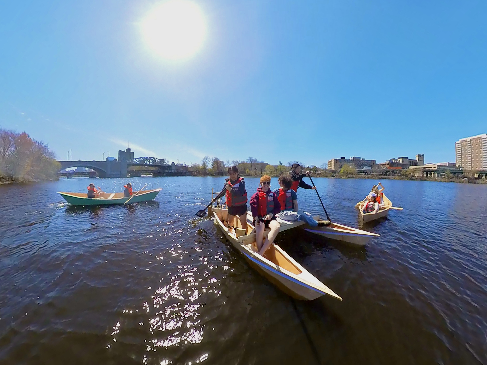
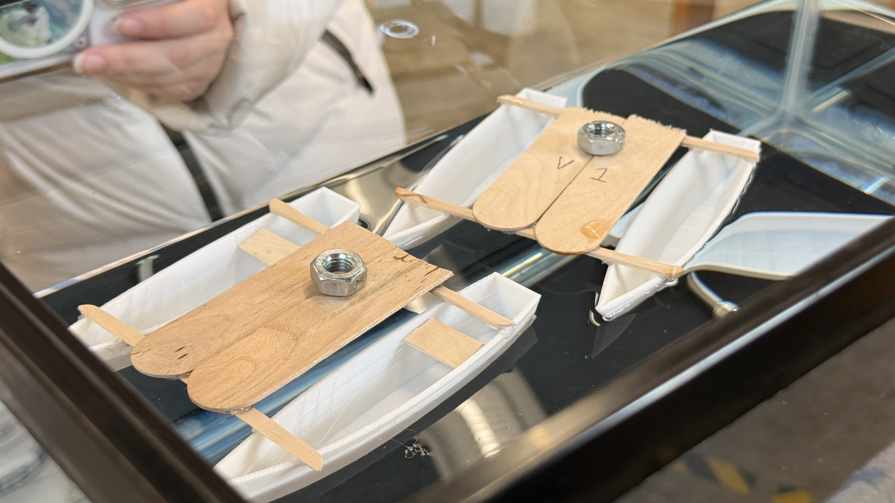
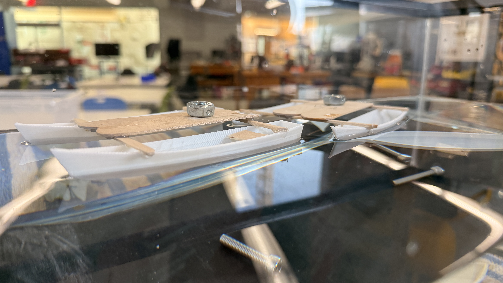
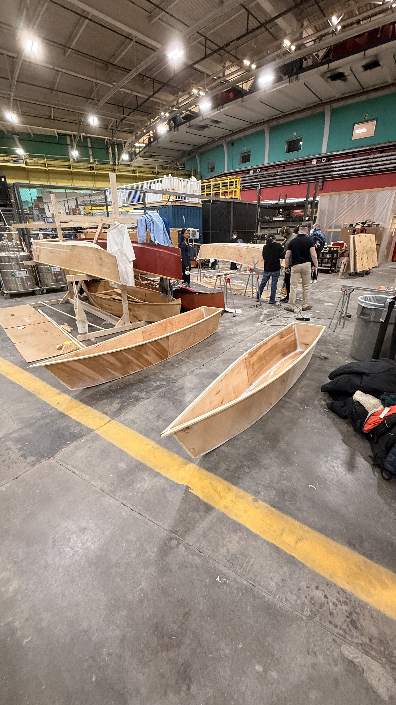
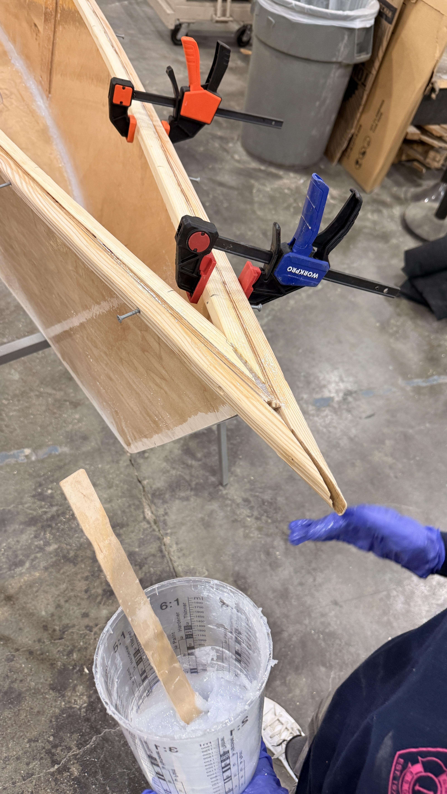
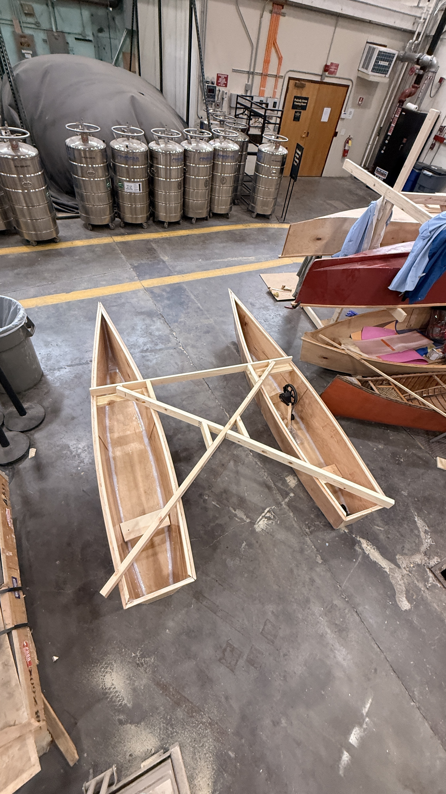
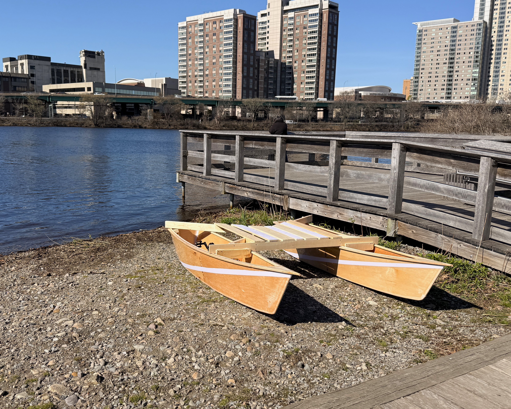
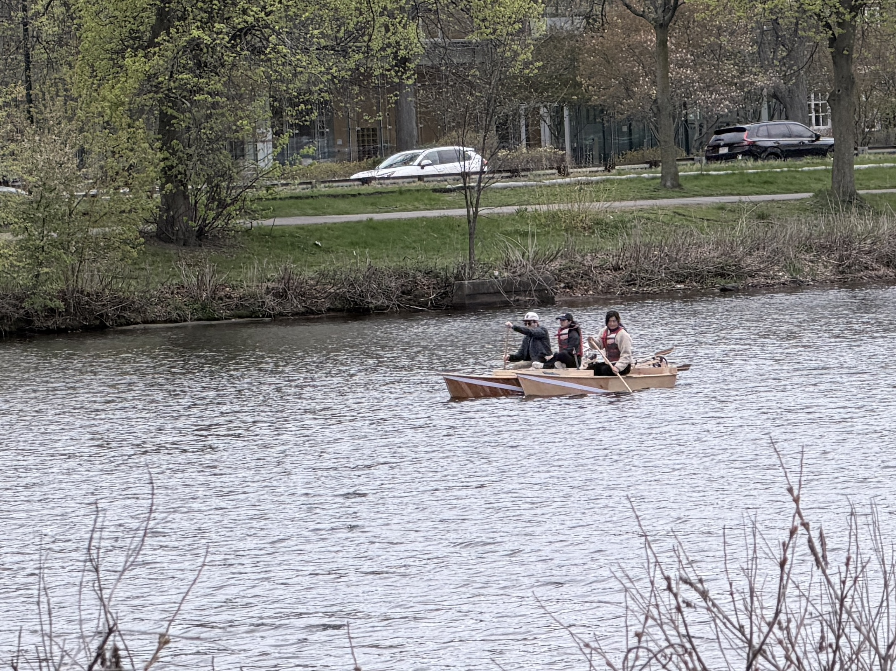

Overview
Building a catamaran from scratch included three main parts: design, hull construction, and deck construction. In design, my team and I used Rhino 8 parametric CAD software to design a hollow boat hull, this was later scaled 20:1 for a small-scale test with proportional weight to fond the optimized design. Hull construction involved unfolding the CAD and making real-sized stencils, cutting down and joining plywood, shaping gunwales, and using thickened epoxy as sealant. Deck construction was largely made from 2x4 planks and decking for a lightweight and adaptable design, there were two mounting points and three contact areas on each hull. Hover over the gallery tiles below for short captions.
See the pedal propulsion system built for this boat →Scale prototypes
Small mock-ups validated hull spacing, deck ballast, and overall stability before committing to full-size.


Fabrication
Full-size panel layout, epoxy fillets, and team clamp-ups in the workshop.






Assembly
Individual hulls came together into a complete catamaran with slatted decking, pedal hardware, and an awesome paint job.


On the water
Testing the catamaran on the Charles River, from shore prep to paddling trials.



Structure & build
We used lightweight 6mm plywood sheets to cut out our full-scale stencils, then sealed each completed panel with epoxy before assembling with fiberglass tape at the seams. Cross-bracing and a slatted deck tied the hulls into one rigid platform while keeping weight low enough for two people to carry the boat to the water.
Propulsion & control
Each hull seats one crew in the back and one passenger in the front for a total capacity of 4 people. The hulls each have a pedal crank and propulsion system so the boat can be driven with differential thrust. I led development of that pedal propulsion system as a companion project—see the link above for assembly, testing, and the final product!